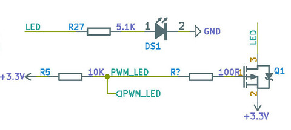
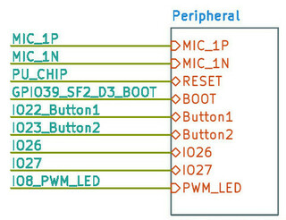
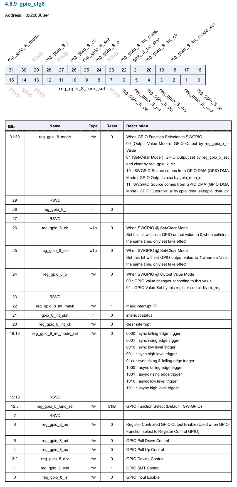
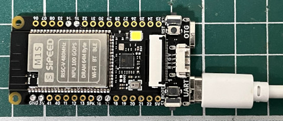
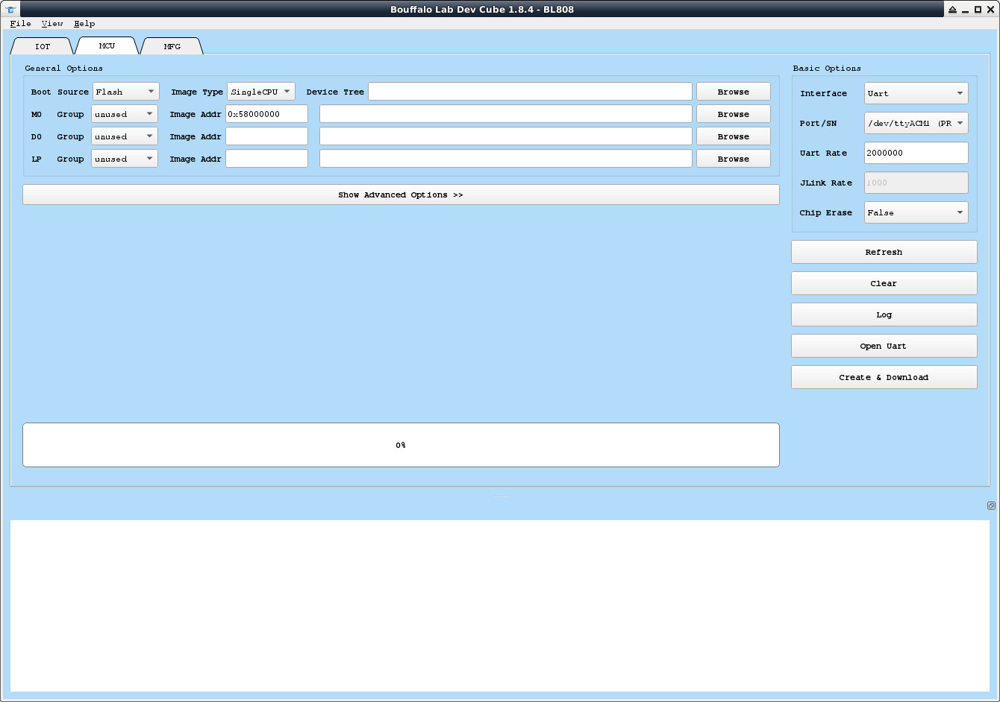
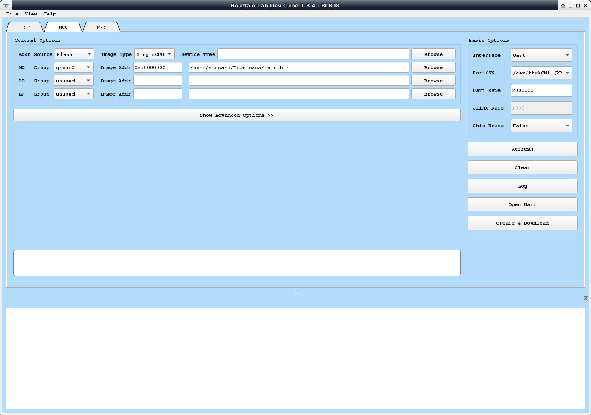
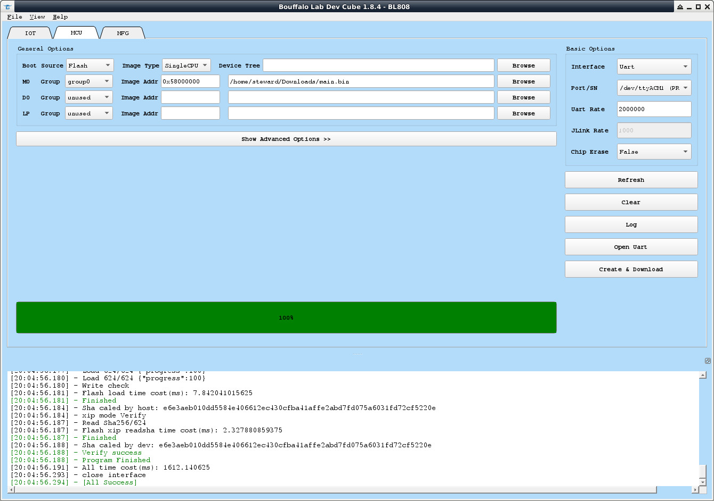
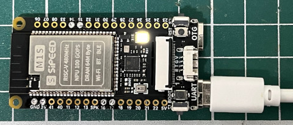

Steward
分享是一種喜悅、更是一種幸福
微處理器 - Bouffalo Lab BL808 (Sipeed M1s Dock) - Assembly - LED
參考資訊：
https://github.com/bouffalolab/bl808_linux
https://wiki.sipeed.com/hardware/en/maix/m1s/m1s_dock.html
LED是連接到IO8


每個GPIO都支援多種功能切換

gpio_cfg8

main.s
.global _start
.equiv gpio_cfg8, 0x200008e4
.text
.org 0x0000
_vector:
j _start
.org 0x0200
_start:
fence
fence.i
icache.iall
csrr a5, mhcr
ori a5, a5, 1
csrw mhcr, a5
fence
fence.i
fence
fence.i
dcache.iall
csrr a5, mhcr
lui a4, 1
addi a4, a4, 62
or a5, a5, a4
csrw mhcr, a5
fence
fence.i
li t0, (1 << 6) | (11 << 8) | (1 << 24)
li t1, (1 << 24)
0:
xor t0, t0, t1
li a0, gpio_cfg8
sw t0, 0(a0)
lui t2, 10000
1:
nop
addi t2, t2, -1
bgtz t2, 1b
j 0b
.end
main.ld
MEMORY {
FLASH : ORIGIN = 0x58000000, LENGTH = 32M
}
SECTIONS {
.text : { *(.text*) } > FLASH
.rodata : { *(.rodata*) } > FLASH
.bss : { *(.bss*) } > FLASH
}
Makefile
all: riscv64-unknown-linux-gnu-gcc -o main.o main.s -nostdlib -march=rv32imafcpzpsfoperand_xtheade -mabi=ilp32f -mtune=e907 riscv64-unknown-linux-gnu-ld -T main.ld -o main.elf main.o -b elf32-littleriscv riscv64-unknown-linux-gnu-objcopy -O binary main.elf main.bin clean: rm -rf main.bin main.o main.elf
編譯
$ make
riscv64-unknown-linux-gnu-gcc -o main.o main.s -nostdlib -march=rv32imafcpzpsfoperand_xtheade -mabi=ilp32f -mtune=e907
riscv64-unknown-linux-gnu-ld -T main.ld -o main.elf main.o -b elf32-littleriscv
riscv64-unknown-linux-gnu-ld: Using an executable file (main.o) as input to a link is deprecated - support is likely to be removed in the future
riscv64-unknown-linux-gnu-objcopy -O binary main.elf main.bin
連接UART到PC

執行BLDevCube-ubuntu

因為目前只需要使用M0，因此，切換到MCU頁面，將M0 Group設定成group0，Image Addr設定成Flash起始位址0x58000000，然後選擇main.bin，Port/SN會根據個人的電腦而不一樣，司徒的是/dev/ttyACM1，Uart Rate設定成2000000

因為Sipeed M1s Dock有連接PU_CHIP(RST)到BL702，因此，按下Create & Download就可以燒錄完成

假如遇到無法燒錄的狀況時，可以使用如下方式進入燒錄模式：
1. 按下BOOT按鍵
2. 按下RST按鍵
3. 放開RST按鍵
4. 放開BOOT按鍵
然後再次按下Create & Download就可以燒錄完成
接著，按下RST按鍵或者按下BLDevCube-ubuntu的Open Uart按鈕
